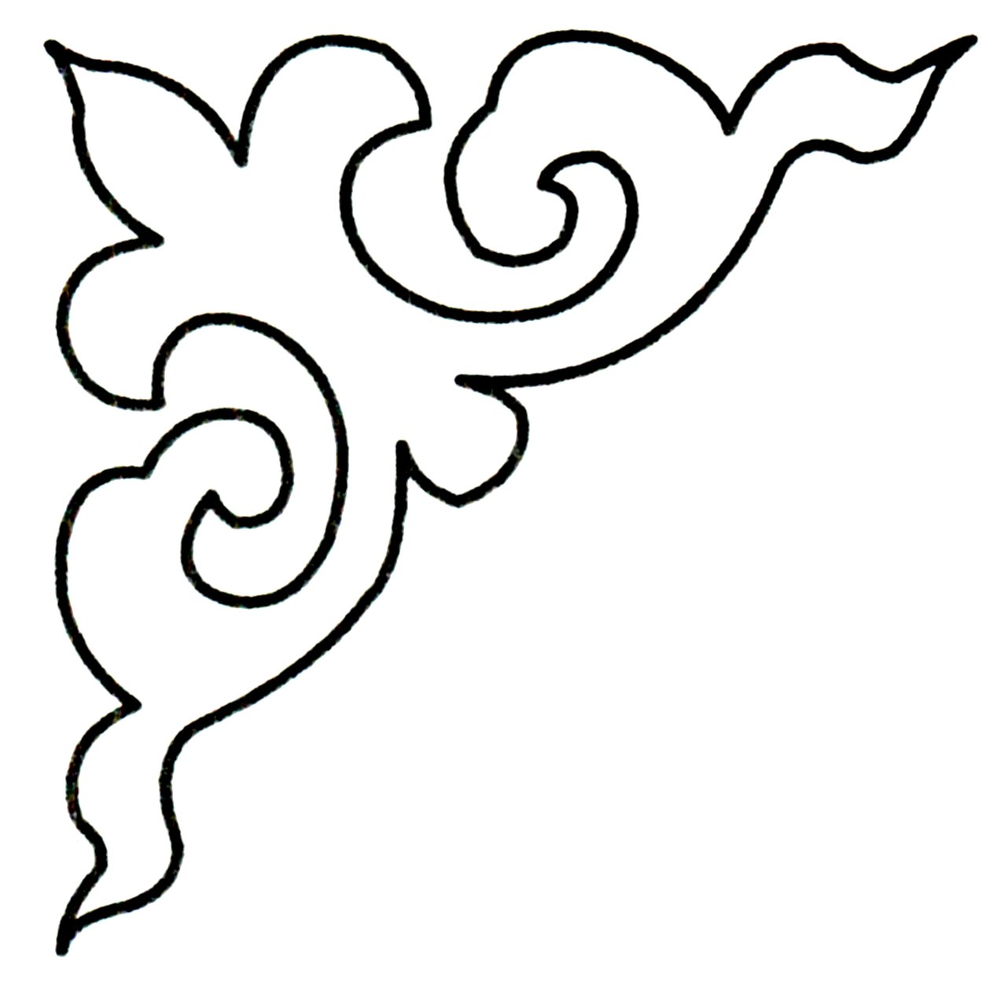

Charles O'Neill, Alim Gumran, David Klindt
Accepted to ICML 2025.
arXiv.
I am a machine learning researcher currently studying reinforcement learning. I have participated at AI Safety Camp and worked as an ML engineer in the industry, focusing on image and video processing. I will soon begin my Master's in Computer Science at École normale supérieure de Lyon after completing my Bachelor's in Mathematics at Nazarbayev University.
Research projects
Alim Gumran, Aruzhan Sabyrbek, Daria Gole, Arman Bolatov, Zhanbolat Nurbayev, Madina Sultanova, Siamac Fazli
Accepted to ICBBT 2025.
Jonathan Bostock, Alim Gumran, Benjamin Kolb
In progress. (Proposal.)